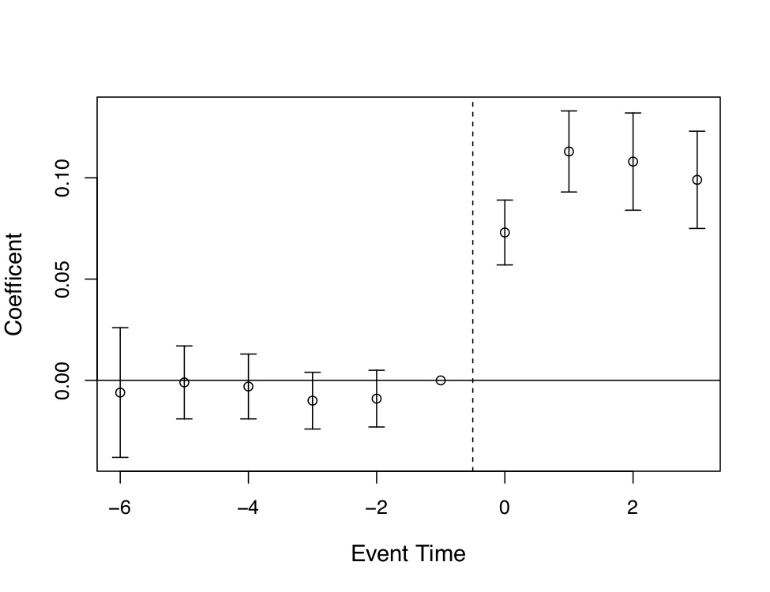
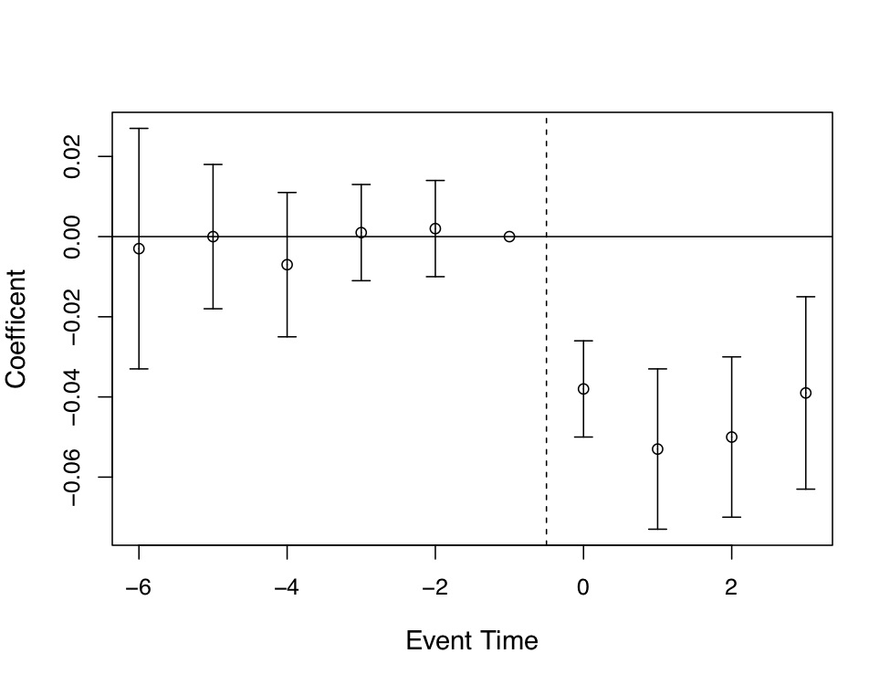

library(tidyverse); library(modelsummary); library(fixest)
od <- causaldata::organ_donations
# Treatment variable
od <- od %>%
mutate(Treated = State == 'California' &
Quarter %in% c('Q32011','Q42011','Q12012'))
# feols clusters by the first
# fixed effect by default, no adjustment necessary
clfe <- feols(Rate ~ Treated | State + Quarter,
data = od)
msummary(clfe, stars = c('*' = .1, '**' = .05, '***' = .01), coef = "Treated", nobs = TRUE)Causal Inference Methods for Policy Evaluation
5-Difference in Differences
Jacopo Mazza
Utrecht School of Economics
2024
The politics of Minimum Wages
Minimum Wages around the World
The Minimum Wage Debate
Minimum wages are a hotly debated topic in economics and politics.
Proponents argue that minimum wages are necessary to protect workers from exploitation and poverty.
Opponents argue that minimum wages lead to unemployment and reduce the competitiveness of firms.
Labour economists have been studying the effects of minimum wages for decades.
Their answer:

How would you answer this question with data?
Do you see any complication?
Minimum Wage in New Jersey
The New Jersey Minimum Wage Experiment
- In 1992, New Jersey increased the minimum wage from $4.25 to $5.05 per hour.
- The minimum wage in neighboring Pennsylvania remained constant.
- Card and Krueger (1994)1 used this natural experiment to study the effects of minimum wages on employment.
The idea

- Compare the employment in fast-food restaurants in New Jersey and Pennsylvania before and after the minimum wage increase.
- Why Pennsylvania?
- Nearby state and likely affected by common unobservable shocks.
- Presumably affected by the same unobservable shocks, but did not increase minimum wage.
- Why Fast-food restaurants?
- Fast-food restaurants are major employers of low-wage workers.
Why not just compare the employment in New Jersey before and after the minimum wage increase?
Why not just compare the employment in New Jersey to that in Pennsylvania after the minimum wage increase?
Difference in Differences: The Idea

Difference in Differences: The Idea
- Find a control group that did not experience the treatment.
- Compare the difference in the outcome variable between the treatment and control group before the treatment.
- Compare the difference in the outcome variable between the treatment and control group after the treatment.
- The difference in the differences is the treatment effect.
- The treatment effect is estimated as the difference in trends.
Strengths and Requirements
Strengths:
- Simple and intuitive.
- Treated and control units can be systematically different.
Requirements:
- Observe the same units before and after the treatment.
Key Assumption:
- The treatment and control groups would have followed the same trend in the absence of the treatment.
Card and Krueger’s DiD Estimates
Outcome Variable: \(Y\) = FTE (Full time employment).
FTE decreased in Pennsylvania (-2.16) and increased slightly in New Jersey (0.59).
The difference in differences is 2.75.
This result speaks against the conventional wisdom that minimum wages reduce employment.
The DiD Estimator
The DiD Estimator
Difference in Differences can be estimated in two ways:
Simple DiD: The difference in the average outcome variable between the treatment and control group before and after the treatment.
Regression DiD: A linear regression model that includes a treatment indicator and a time indicator.
Simple DiD
- With one treatment, one control group, both observed twice the simple DiD estimator1 is:
\[ \hat{\delta}^{2\times 2}_{kU}=(\bar{y}^{post(k)}_k-\bar{y}^{pre(k)}_k)-(\bar{y}^{post(U)}_U-\bar{y}^{pre(U)}_U) \]
Where:
- \(k\) is the treatment group.
- \(U\) is the control group.
Rewriting as conditional expectations:
\[ \hat{\delta}^{2\times 2}_{kU}=(E[Y_{k}|Post]-E[Y_{k}|Pre]) \\ -(E[Y_{U}|Post]-E[Y_{U}|Pre]) \]
By the switching equation (and adding 0):
\[ \hat{\delta}^{2\times 2}_{kU}=(E[Y^1_{k}|Post]-E[Y^0_{k}|Pre])-(E[Y^0_{U}|Post]-E[Y^0_{U}|Pre]) \\ + E[Y_k^0|Post] - E[Y_k^0|Post] \]
Rearrange the terms to get conditional expected potential outcomes:
\[ \hat{\delta}^{2\times 2}_{kU}= E[Y^1_{k}|Post]-E[Y^0_{k}|Post] \\ + (E[Y^0_{k}|Post]-E[Y^0_{k}|Pre]) + (E[Y_U^0|Post] - E[Y_U^0|Pre]) \]
Regression DiD
Difference in Differences can also be estimated using a linear regression model.
- The goal is to control for group differences and time differences:
\[ Y_{it} = \alpha + \gamma D_i + \lambda POST_t + \delta (D_i \times POST_t) + \varepsilon_{it} \]
Where:
- \(Y_{it}\) is the outcome variable.
- \(D_i\) is a treatment indicator.
- \(POST_t\) is a post treatment time indicator.
- \(\delta\) is the DiD estimator.
Regression DiD Visually
OLS Specification of the DiD Equation
In the MW example the regression DiD model would be:
\(Y_{it} = \alpha + \gamma NJ_s + \lambda d_t + \delta(NJ \times d)_{st} + \varepsilon_{it}\).
- PA pre-treatment: \(\alpha\).
- PA post-treatment: \(\alpha + \lambda\).
- NJ pre-treatment: \(\alpha + \gamma\).
- NJ post-treatment: \(\alpha + \gamma + \lambda + \delta\).
DiD equation = (NJ Post - NJ Pre) - (PA Post - PA Pre) = \(\delta\)
The Two-Way Fixed Effects (TWFE) in R
Kessler and Roth (2014) study the effect of the introduction of an “active choice” policy in California on organ donations.
The policy was introduced in Q3 2011.
The outcome variable is the organ donation rate.
The treatment variable is a dummy for California in Q3 2011, Q4 2011, and Q1 2012.
The
feolsfunction from thefixestpackage estimates the DiD model with two-way fixed effects.
Effect of the “Active Choice” Policy on Organ Donations
| Organ Donation Rate | |
|---|---|
| Treatment | -0.022*** |
| (0.006) | |
| Num.Obs. | 162 |
| FE: State | X |
| FE: Quarter | X |
| Standard errors clustered at the state level \(*p < 0.1, **p < 0.05, ***p < 0.01\) |
DiD with Multiple Time Periods and Groups
The DiD estimator can be extended to multiple time periods and groups.
Advantages:
- More variation in the treatment and control groups.
- More variation over time.
\(Y_{it} = \alpha + \sum^I_{k=i-1} \gamma_k D_{ki} + \sum^T_{j=t-1}\lambda_j P{jt} + \delta_{rDD} (D_i \times P_t) + \varepsilon_{it}\).
We are adding fixed effects for the treatment and control groups and for the time periods.
Fixed Effects Estimation
Fixed Effects
Fixed effects is a method of controlling for all variables, observed or not, as long as they stay constant within some larger category.
Fixed effects controls for units (i.e.: person, company, school, country, year etc.) by including a dummy variable for each unit.
Fixed effects uses the within-unit variation to estimate the effect.
All between-unit variation is removed.
Fixed Effects Simple Example
| Individual | Year | Exercise |
|---|---|---|
| You | 2022 | 5 |
| You | 2023 | 7 |
| Me | 2022 | 4 |
| Me | 2023 | 3 |
We want to estimate the effect of exercising on getting a cold.
We suspect that genetics might play a role in getting a cold.
Genetics are constant within each individual.
We can control for genetics by including a dummy variable for each individual and only use the variation in exercise within each individual.
Fixed Effects Simple Example
| Individual | Year | Exercise | Mean Exercise | Within Exercise |
|---|---|---|---|---|
| You | 2019 | 5 | 6.0 | -1.0 |
| You | 2020 | 7 | 6.0 | 1.0 |
| Me | 2019 | 4 | 3.5 | 0.5 |
| Me | 2020 | 3 | 3.5 | -0.5 |
We calculate the mean exercise for each individual.
We calculate the within exercise by subtracting the mean exercise from the exercise.
We can estimate the effect of within exercise on getting a cold keeping constant the individual fixed effects.
The difference between individuals in the means is the between variation.
Fixed Effects Estimation
- Fixed effect look a lot like a standard OLS regression, but with a twist:
\[ Y_{it} = \alpha_i + \beta_1 X_{it} + \varepsilon_{it} \]
- \(X\) has a time subscript.
- \(\alpha_i\) varies across units.
Visualizing Fixed Effects
Standard Errors in DiD
Potential serial correlation of error terms within units over time
- Lead to biased standard errors
Cluster standard errors at the level of units (e.g., states, firms, individuals)
Influential paper by Bertrand/Duflo/Mullainthan (2004, QJE)
- They have shown that many papers were too optimistic (too low standard errors) by neglecting serial correlation
Treatment Effects in DiD
For whom are the treatment effects estimated?
Supporting the Parallel Trends Assumption
The Parallel Trends Assumption
Parallel trends assumption is crucial for the validity of the DiD estimator.
The assumption is that the treatment and control groups would have followed the same trend in the absence of the treatment.
The assumption is untestable.
The assumption can be supported by:
- Graphical analysis.
- Event study analysis.
- Placebo tests.
Graphical Analysis
A typical way to support the parallel trends assumption is to plot the outcome variable for the treatment and control groups before the treatment.
Parallel pre-trends can mitigate concerns about violations of the parallel trends assumption.
Event Study Analysis
- With only one treatment group and one never-treated group the event study analysis is simply this OLS:
\[Y_{its} = \alpha + \sum_{\tau=-2}^{-q}\mu_{\tau} (D_s \times \tau_t) + \sum_{\tau=0}^m\delta_{\tau} (D_s \times \tau_t) + \tau_t + D_s + \varepsilon_{ist}\]
- \(D_s\) is an interaction of treatment group \(s\) with calendar year (\(\tau\)).
- Includes \(q\) leads (anticipatory effects) and \(m\) lags (post-treatment effects).
Event Study: How it’s done
You should plot the coefficients of the interaction terms and their 95% confidence intervals.
Under no anticipation you should expect the coefficients on the leads to be 0.
Event Study Application
Miller at al. (2019) study the effect of the introduction of the Affordable Care Act (ACA) on mortality.
They focus on the near-elderly adults in states with and without the Affordable Care Act Medicaid expansions.
They find a 0.13-percentage-point decline in annual mortality (9.3% reduction over the sample mean) as a result of the ACA expansion.
This effect is a result of a reduction in disease-related deaths and gets larger over time
Event Study Visualization


Event Study Visualization (cont.)

Event Study in R
library(tidyverse); library(fixest)
od <- causaldata::organ_donations
# Treatment variable
od <- od %>% mutate(California = State == 'California')
# Interact quarter with being in the treated group using
# the fixest i() function, which also lets us specify
# a reference period (using the numeric version of Quarter)
clfe <- feols(Rate ~ i(Quarter_Num, California, ref = 3) |
State + Quarter_Num, data = od)
# And use coefplot() for a graph of effects
coefplot(clfe)Event Study in R
Placebo Tests
- Placebo tests look for the effect of the treatment in periods or units where the treatment should not be present.
- Same outcome in groups that should not be affected by the treatment.
- Effect on outcomes that should not be affected by the treatment.
Identifying Assumptions in DiD
Parallel Trends Assumption: The treatment and control groups would have followed the same trend in the absence of the treatment.
No (self-)selection into the treatment: who gets treated does not depend on past or future changes in the outcome variable (otherwise it is unrealistic to assume common trends)
No spillover effects: The treatment does not affect the control group (or vice versa)1
No other shocks/changes/events at the same time that matter for both, the outcome variable and the treatment status
External Validity of DiD
- DiD show effects of those units with a change in the treatment status compared to those without a change in the treatment status (control)
- Can we generalize these effects to those units without a change in the treatment status?
- Can we extrapolate the results to larger treatments?
- How informative are the results for other situations (countries, etc.)?